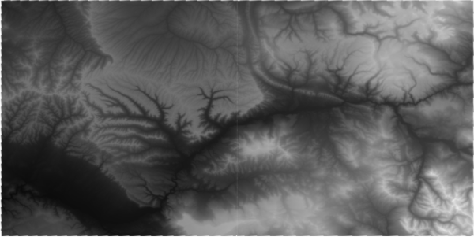
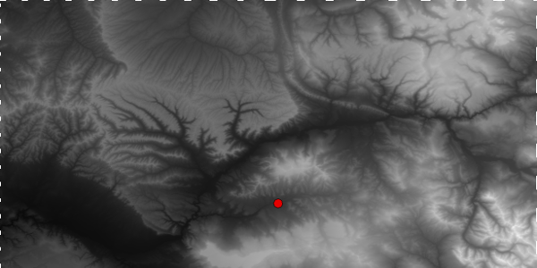
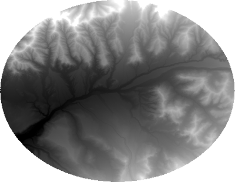
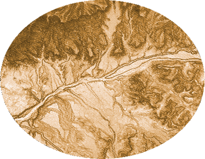
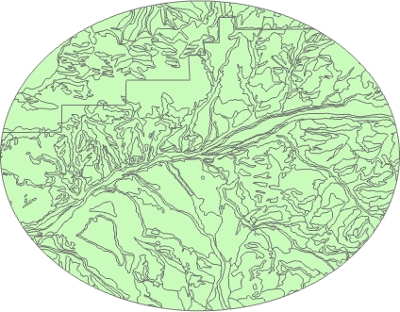

This week, we take a look at how far we’ve gotten towards modeling our landslide susceptibility. Here’s what’s been done so far.
Decide on a town or city.
- For this case study, I chose Collbran, Colorado because it was listed as having the largest landslide in Colorado (cite Wikipedia article).
Decide on a CRS
- I have chosen NAD83 UTM 13N because the datum matches the DEM data I found (see next point) and is also recommended by CDOT (missing link)
Download digital elevation data (e.g., The National Map)
- I had to download two tiles n40w108 and n40w109 because my town is located near the tile intersection

Project raster(s)
Add city to the map by creating a plain text file (e.g., point.txt), creating an XY Point table (such as the one below), and importing to GIS
ID,LAT,LON,CITY,STATE
0,39.240016,-107.963956,Collbran,CO

Project point
Extract DEM by mask (e.g., buffer or poly)
- Chose to create a 10 km buffer around my town because the town limits was pretty small and a 10 km buffer area is less than 100,000 acres—the maximum area for downloading a web soil survey spatial map
- Note: I had to use Cell Statistics to knit together two DEM tiles after mask extraction; I chose to knit after extraction because the files are smaller and processing time would be faster.

Calculate slope

Download soil data (e.g., Soil Web Survey)
- To get my Area of Interest (AOI), I exported the buffer to a shape file and used the shapefile to set my AOI
- Soil Web Survey AOI shapefile and tabular data (zip)

Export soils attribute table to CSV (e.g., use ArcGIS Pro’s Table to Table geoprocessing tool)
FID ,AREASYMBOL ,SPATIALVER ,MUSYM ,MUKEY
0 ,CO682 ,6 ,10 ,496669
1 ,CO682 ,6 ,48 ,496710
Figure out what the soil survey is actually saying
- Data is from the Digital General Soil Map of the United States (STATSGO2) database (see Tables and Columns report found here) and uses a map unit key (MUKEY) and map unit symbol (MUSYM) to relate the shapefile’s attribute table to soil information (presumably in the tabular files)
- Files of interest:
- comp.txt (link between mapunit key and component key)
- chorizon.txt (link between component key and horizon key)
- chunifie.txt (link between horizon key and horizon unified classification)
- muagatt.txt (link between map unit symbol and minimum bedrock depth, cm)
- I need to build a table that matches map unit key –> component key –> horizon key –> unified classification –> angle of friction/cohesion
- First attempt at adding ASCII table to ArcGIS Pro failed (everything dumped into a single field; so, it doesn’t seem to recognize the pipe character “|” as a delimiter)
Update
So it turns out that neither MUSYM nor MUKEY in the attribute table matches anything in any of the files in the tabular directory; so, that’s about three hours gone.